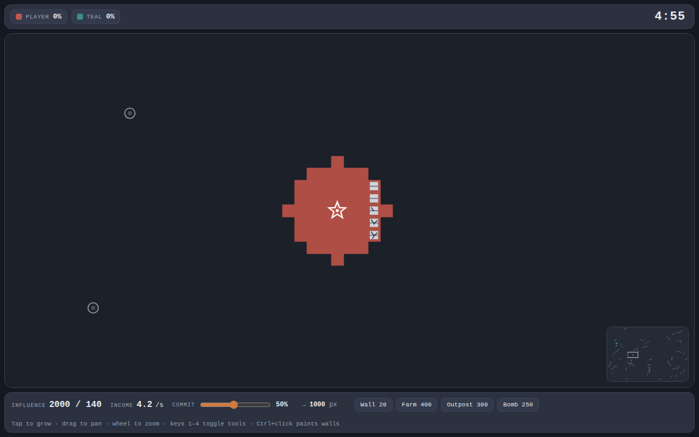
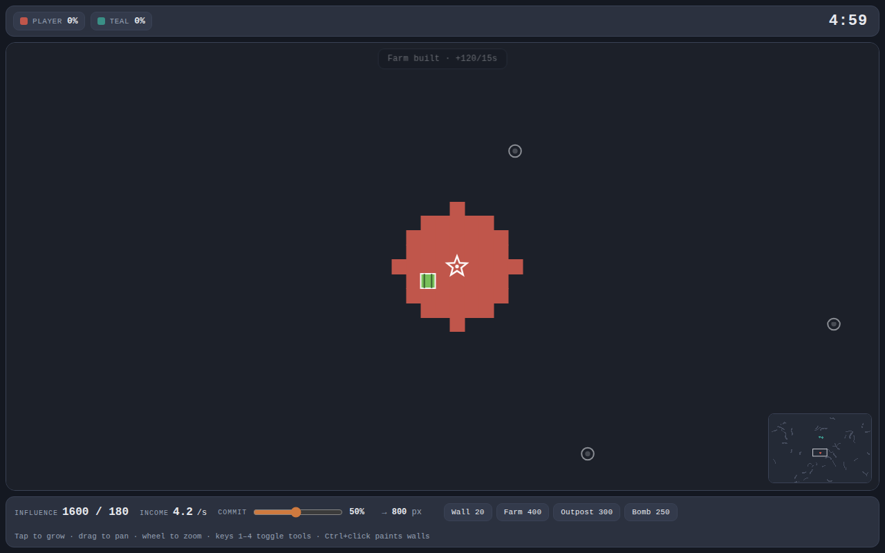
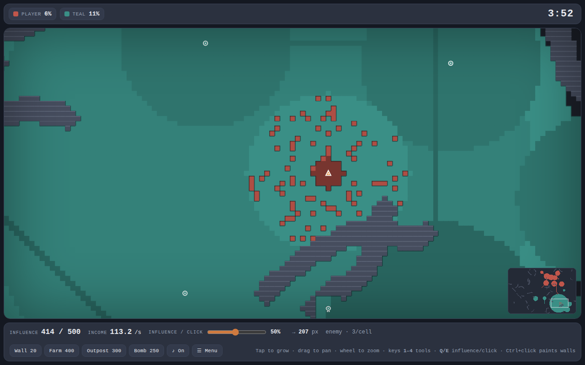
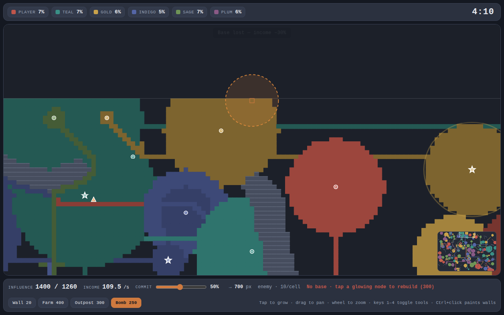
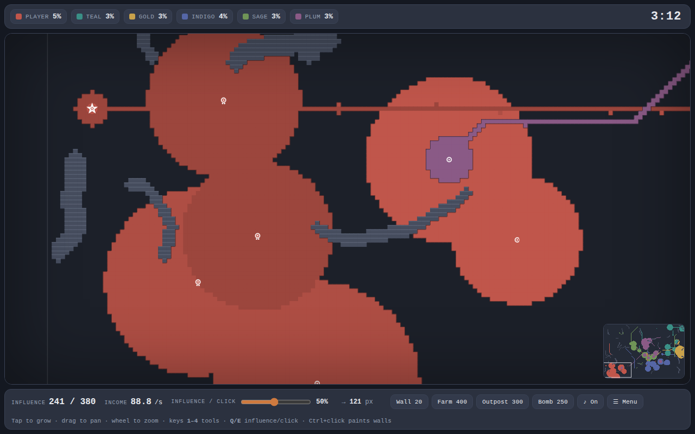
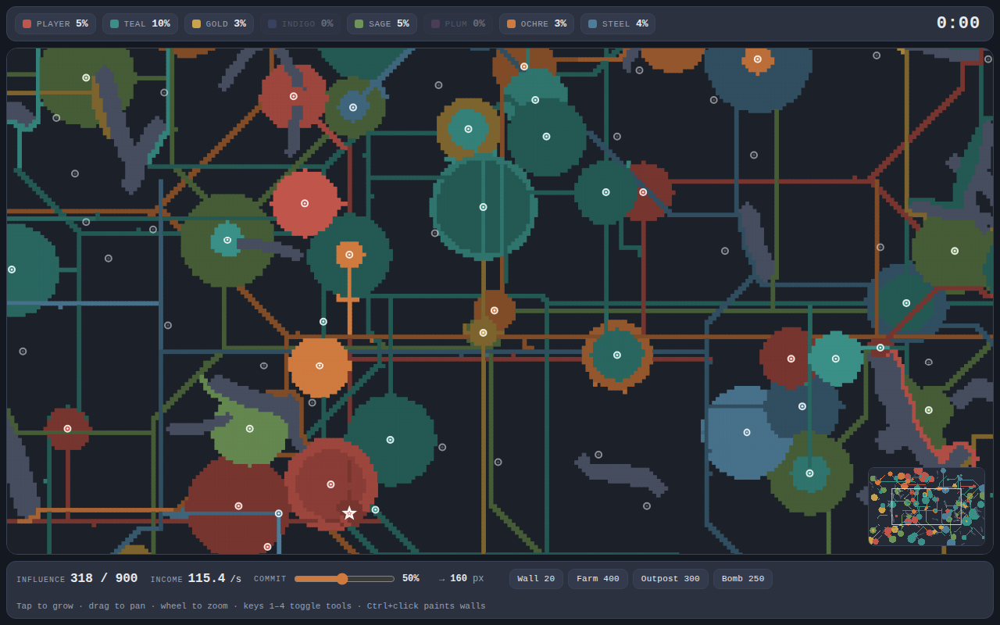
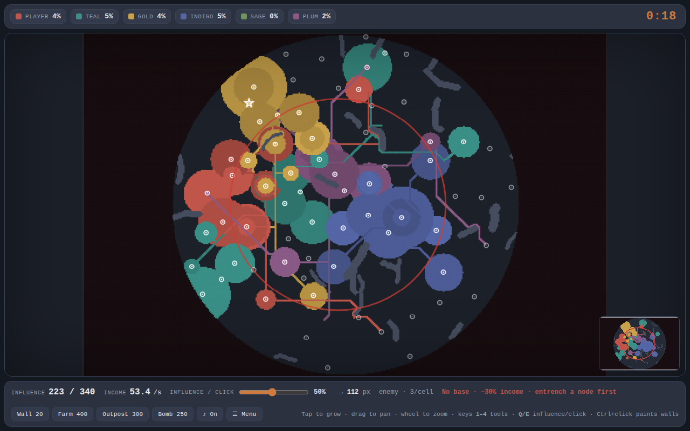
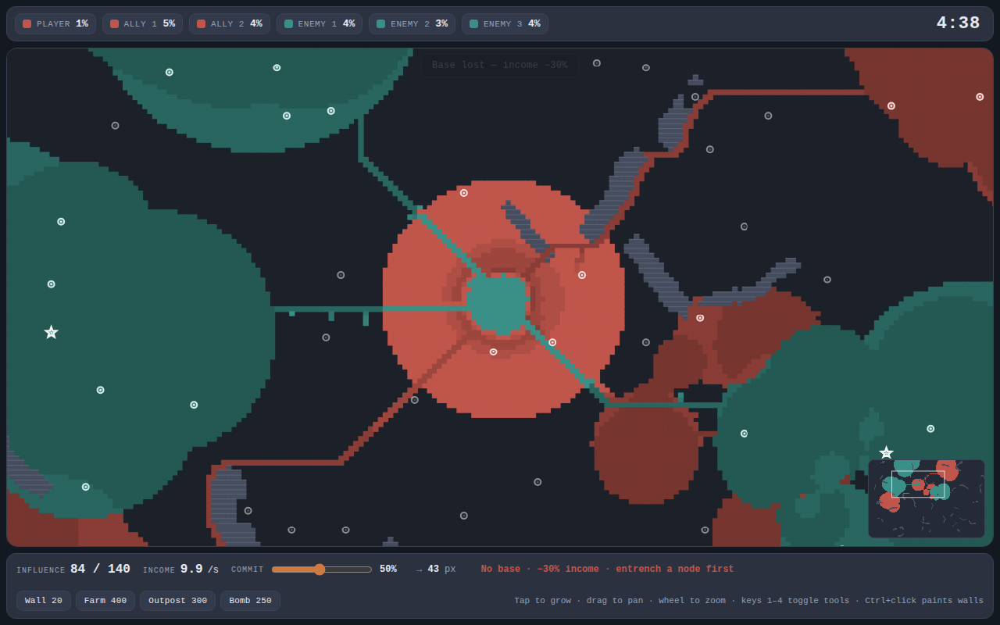

Paint the map your colour. Feed your economy. Ruin somebody's afternoon.
You have influence. It buys land, one point per cell. Land and nodes make more influence. Hold the most ground when the clock stops — or be the last one standing. That's it. Everything below is spice.
Empty land costs 1 influence per cell. Enemy land costs more the longer they've held it:
The Commit slider sets how hard each tap swings — low for careful pokes, high to throw everything at one push.
Hit the bright seams, don't grind into dark cores. And pushing far from your nodes costs extra — capture your way forward instead of lunging across the map.
Nodes are the ringed dots on the map. Grow over one to capture it. Each node pays you influence, raises your cap, and extends how far you can push cheaply. Stealing an enemy's node pays a fat bonus and starves them.
The star is your base. Lose it and your income drops 30%. To rebuild: fully entrench a node (it'll glow), tap it, pay 300. Back in business.
Grey rock barriers carve up the map — you can't own them or cross them, so armies flow around like water. New barriers keep forming mid-round. A lane that's open now might not stay open. Plan accordingly.
A wall has 25 durability. Attackers must chip through it before they can take the cell — every point of influence they throw at it knocks off a point of durability, and the damage shows as cracks.

Top walls: fresh. Bottom walls: one hit from crumbling.
Pays +120 influence every 15s and raises your influence cap by 40. It pays for itself in under a minute — the earlier you build it, the more it prints.

Every 12 seconds it claims up to 40 cells around itself, preferring enemy land, leaving a defended beachhead and softening nearby entrenchment. It's also a forward supply point: you can expand (and bomb) cheaply around it, the same as around a node.

The triangle is the outpost — see the red splash chewing into teal land.
An aimed strike. Blasts a crater out of enemy territory — their cells, walls and buildings are wiped (nodes survive). Works anywhere within your supply range, on a 25s cooldown.

Orange ring = valid target. Red ring = out of range or still recharging.
The clock race: most territory when time runs out wins.

No clock. Lose all your land and you're out — last one standing wins.

Greyed-out names in the scoreboard are already eliminated.
A circular map that collapses five times, two minutes per phase — and never quite toward the middle.

Scorched ground outside the circle is gone for good. The red ring is the next safe zone.
Bot allies who share your colour against a matched enemy team. Most combined ground wins — or wipe the other team out.

One colour per team — your allies are literally on your side of the map.
Expect things to change, break, and get better. If you've got ideas, feedback, or you hit a bug, I'd love to hear it.
Find me on Discord: @evropiani
Play